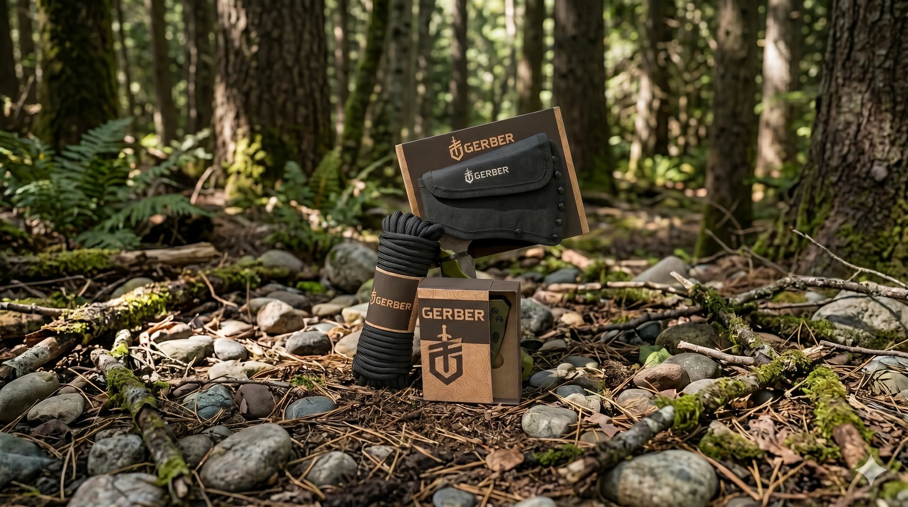

DevinSanders
I design infographics, Amazon storefronts and brand identities. My favorite part is watching a blank page turn into a whole system that actually works.
Selected workSelected work · 2024—2026
Currently designing at RIPPLWANDRD
Amazon Brand Store · Infographics · 2025
The live Amazon Brand Store, plus the product infographics and graphics around it.
View projectKleenBore
Amazon infographic system · 2026
Listing graphics for a firearm-cleaning brand, built from one template system and scaled across the catalog.
View project
Gerber Gear
Structural packaging · 2026
Laser-cut kraft packaging for three field tools: a pocket knife, a hatchet and paracord. No plastic clamshells.
View project
Rexburg Rapids
Brand identity · 2026
A full identity for a summer waterpark, from the R mark to the wristbands, signs and billboards.
View project
AboutFace
Editorial typography · 2026
Five journal covers. Each one unlocks one more typographic variable, from a single size and weight to full freedom.
View project
Motion Reel
Motion design · 2026
Kinetic type and logo animation, made in After Effects.
Watch the reel


About
I am definitely that person who stops in grocery store aisles just to pick up a box and admire the packaging.
- NowDesigner at RIPPL. I started there in Rexburg and now work remotely.
- BasedDenver, Colorado
- IntoInformation design: taking a lot of information and making it quick to read.